Documentation
Сборка исходного кода
1. Клонируем проект рекурсивно
2. Сборка X-Ray Engine
X-Ray находится по данному пути:
Данный проект нужно открыть и скомпилировать с нужной конфигурацией.
(Таблица
соответствий конфигураций UnrealEngine с XRayEngine)
2.1. Пример сборки
Сборка "DebugGame Editor" в проекте Unreal
Для этого мне нужно собрать все решение с
конфигурацией Debug. Все как в той таблицы иначе не запуститься!
3. После сборки X-Ray Engine
После успешной сборки X-Ray Engine, следует вернуться в корневую папку репозитория, и сгенерировать проект.
Примечания.
* Если нет пунктов "Generate Visual Studio project files", можно исправить
по этому видео.
* Перед генерацией проекта, в избежании ошибок при компиляции, нужно оставить только
последнюю версию MSVC в Visual Studio Installer
3.1. Компиляция файлов для запуска проекта Unreal Engine
После генерации проекта Visual Studio, нужно открыть его и выбрал нужную конфигурацию собрать.
Примечания.
* После сборки возможно запустить редактор, но вы не сможете играть пока
не поставите полный контент.
* Актуальную сборку контента для последнего билда вы можете найти в дискоде, в канале #last-build
Соответствия конфигураций решений
| Unreal Engine 5 | X-RAY Engine |
|---|---|
| Debug | Debug |
| Debug Client | Debug |
| Debug Editor | Debug |
| Debug Server | Debug |
| DebugGame | Debug |
| DebugGame Client | Debug |
| DebugGame Editor | Debug |
| DebugGame Server | Debug |
| Development | Release |
| Development Client | Release |
| Development Editor | Release |
| Development Server | Release |
| Shipping | Shipping |
| Shipping Client | Shipping |
| Shipping Server | Shipping |
| Test | Shipping |
| Test Client | Shipping |
| Test Server | Shipping |
Смена игры в Unreal Engine
1. Подготовка
Для начала убедитесь, что у вас не загружен уровень со спавном, иначе это может
привезти к вылету.
Также желательно создать пустой уровень.
2. Смена игры и перезагрузка XrGame
Выбираем нужную игру и ждём пока перезагрузится нужный XrGame
Примечание.
* Спавн автоматически обновляется после смены игры.
Импорт контента из gamedata/rawdata
1. Подготовка ресурсов
Если вы решили импортировать контент из gamedata, то вам сначала надо поставить полную версию gamedata и rawdata в корневую папку проекта
| Игра | Название gamedata | Название rawdata |
|---|---|---|
| S.T.A.L.K.E.R.: Shadow of Chernobyl | gamedata_soc | rawdata_soc |
| S.T.A.L.K.E.R.: Clear Sky | gamedata_cs | rawdata_cs |
| S.T.A.L.K.E.R.: Call of Pripyat | gamedata | rawdata |
Таблица с названием папок, куда следует поместить ресурсы в зависимости от нужной игры.
Примечание.
* Изначально папки gamedata для всех трёх частей есть в git'е, но
в них только скрипты и конфиги ИХ УДАЛЯТЬ ИЛИ ЗАМЕНЯТЬ НЕЛЬЗЯ
2. Импорт в Unreal Engine
После того как вы поставили gamedata в редакторе вам надо сделать минимальный импорт нужного контакта для запуска PIE(Play In Editor).
Для начало откройте меню "Stalker"
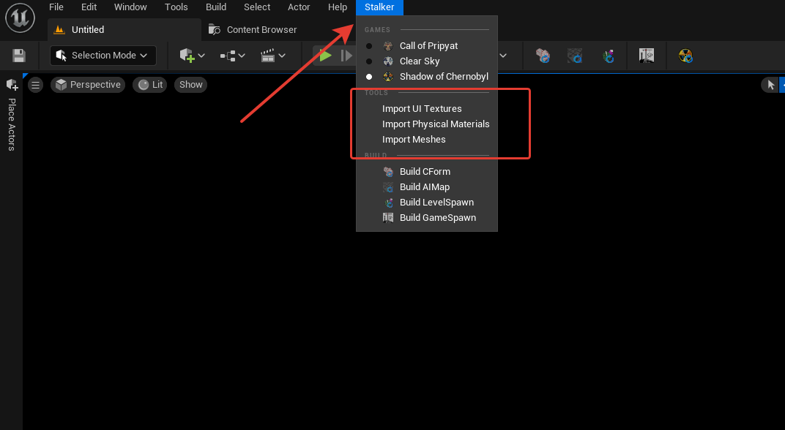
По очерёдности вызовете три команды импорта такие как "Import UI Textures",
"Import Physical Materials", "Import Meshes".
После этого можно создать тестовую локу и запустить PIE
Примечание.
* Проект позволяет импортировать следующие форматы в UE5:
-
dds(с сжатием)
- ogf
- object
- level(XRay SDK)
- gamemtl.xr
Как работать с WayObject
1. WayObjects
Для начало его нужно создать. Ищем в "Place Actors" Stalker Way Object.
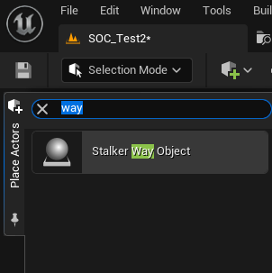
Далее нужно перейти в режим редактирования "Way Points Editor".
Описания режима редактирования. Он полностью аналогичен оригинальному
редактору.
Пример работы.
2. Дополнительная информация
Way Object'ы являются частью спавна, следовательно, при их редактирование
спавн устаревает и требует пересборку.
Она также может быть автоматической или ручной все как вы настроите.
Про то как работать со спавном прочтите "Как работать с Spawn
Object'ами"
Рендер Way points можно включить и выключить в "show"
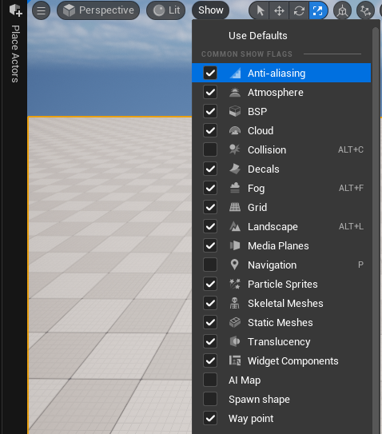Как работать с AI Map
1. Создание
Редактирования AIMap схоже с оригинальным редактором GSC
Для начало надо выбрать режим редактирования AIMap в редакторе.
Описания окна редактора AIMap.
Примечание.
* Генерация работает только в зоне
StalkerAIMapBoundsVolume:
* Генерация не будет работать за зоной StalkerAIMapBoundsVolume. Также их
может быть несколько.
2. Пример работы с AIMap
Генерация AIMap.
3. Дополнительная информация
UnrealEditor автоматически помечает что AI стека требует пересборку
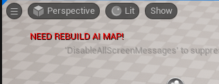
Сборка может быть автоматический при необходимости перед запуском
PIE(Play In Editor)
Рендер AIMap можно включить и без режима редактирования AIMap в меню
"show"
Как работать с SpawnObject
1. Создание
Редактирования Spawn Objects схоже с оригинальным редактором GSC
В "Place Actors" создан отдельный список объектов, он заполняется
автоматически как в оригинальном SDK GSC.
Они также работают через SE_Factory.
Свойства почти идентичны GSC свойствам спавна Shape (Box, Sphere).
Добавляются как компонент.
Пример заполнения Shapes SpawnObject.
Их отображение можно отключить.
2. Сборка Spawn для игры
Также UnrealEditor автоматически помечает, что LevelSpawn требует пересборку.
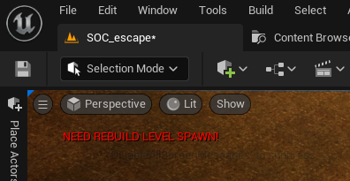
Сборка спавна как и у пыс делится на два типа:
1. LevelSpawn - Спавн уровня (Спавн уровня можно собрать только на самом
уровне)
2. GameSpawn - Спавн всей игры (Собирается из спавнов уровней как настроите)
Она также может быть автоматической при необходимости для PIE(Play In Editor).
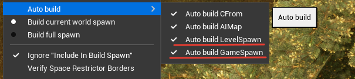
Для PIE есть режимы сборки GameSpawn
Настройка списка уровней которые используется для сборки GameSpawn
находится в настройках проекта. Для каждой игры свой список
Тут настраивается ссылка на уровень также и "Include In Build Spawn"
При отключенном "Include In Build Spawn" и в PIE "Ignore "Include In
Build Spawn"" уровень при автоматической сборке "Build full spawn" не будет
включен в список
Также сборку можно вызвать в ручную
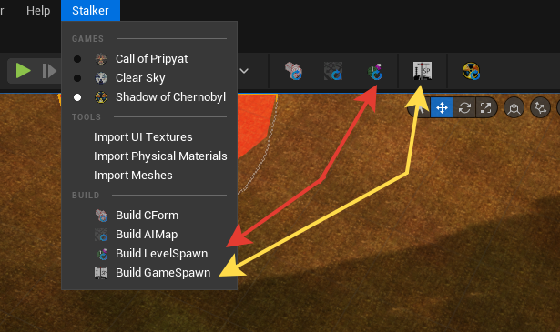Сборка GameSpawn из бара или меню будет собирать весь GameSpawn целиком с игнорированием "Include In Build Spawn"(то есть все уровне которые есть в списке для данной игры)
Как выглядит лог сборки LevelSpawn
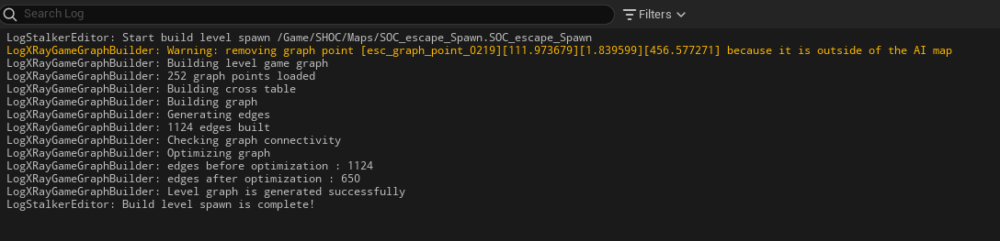Как выглядит лог сборки GameSpawn
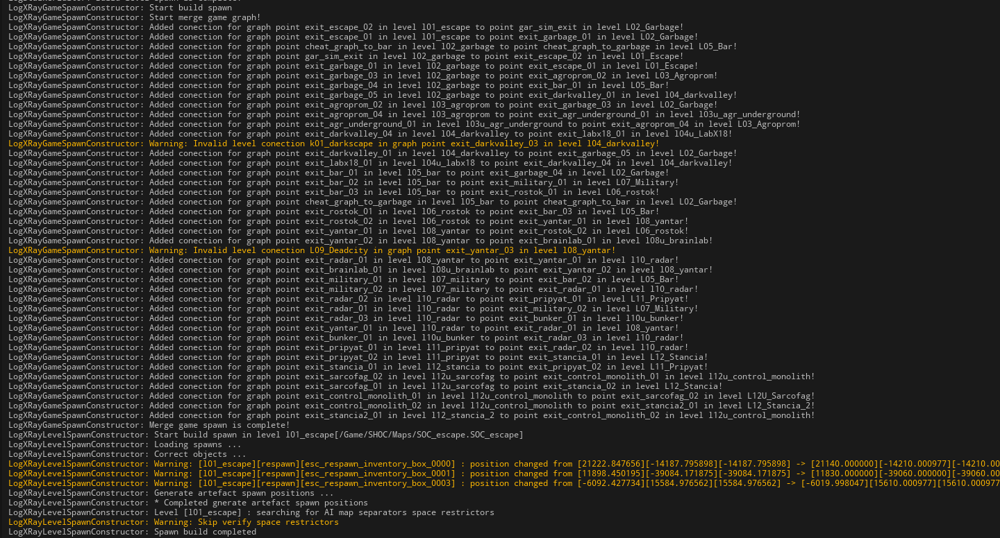
Для корректной сборки GameSpawn нужно чтобы все пункты были
выполнены:
1. Хотя бы один GraphPoint на каждом уровне
2. только один "actor" он single_player
3. наличие у уровня собранного LevelSpawn,AIMap
Собранный файл выглядит как в оригинале:
При ошибке при сборке спавна, подробная информация указывается в логе
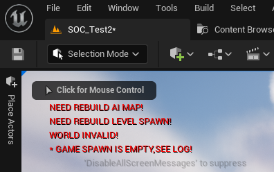Примечания по CForm
CForm -- это геометрия для коллизии и физики GSC
В отличие от AIMap или Spawn она не может проверяться на необходимость пересборки
Можно настроить её сборку автоматически перед началом PIE(Play In Editor)
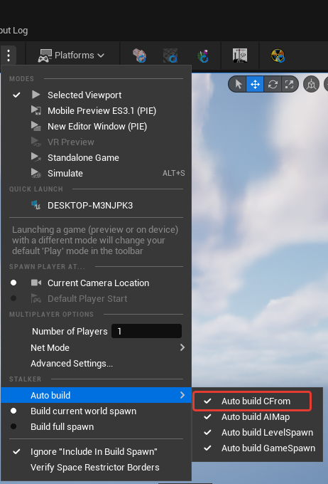
Также её можно собрать вручную
Перезагрузка XrGame и XrSE_Factory
Перезагрузка XrGame и XrSE_Factory делается одной кнопкой
Если есть потребность перезагрузить, обновить список объектов или обновить
конфиги, то эта кнопка для вас.
Она полностью перезагружает system.ltx, game.ltx
Также перезагружает se_factory включая его скрипты.
У XrGame скрипты перезагружаются каждый запуск PIE!